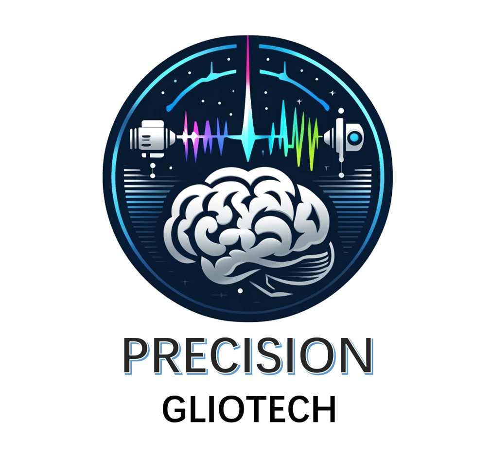
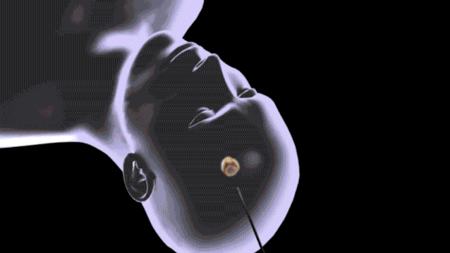

欢迎来到PrecisionGlioTech
我们致力于结合拉曼光谱和激光消融技术，为脑胶质瘤的精准治疗提供最先进的解决方案。

我们致力于结合拉曼光谱和激光消融技术，为脑胶质瘤的精准治疗提供最先进的解决方案。
PrecisionGlioTech是一个来自于北京航空航天大学生物与医学工程学院，专注于脑胶质瘤精准手术的创新创业团队。我们希望与北航高精尖光学中心合作，开发结合拉曼光谱和激光消融技术的GliomaCutter Pro产品。
团队队长，负责规划与统筹协调
负责医学基础——脑胶质瘤临床情况、病理背景调研
负责硬件——拉曼成像技术调研
负责硬件——激光消融技术调研
负责软件和算法调研
我们开发的GliomaCutter Pro产品，通过新型微创技术（切口约3mm，利用光纤传导拉曼探测以及激光置入到病灶位置，通过激光加热周围组织来产生可控的热损伤。实现对脑胶质瘤消融区域的连续监控，并可随时停止
地址: 北京市海淀区花园路街道学院路37号
电话: +86-13141020817
邮箱: contact@precisiongliotech.com